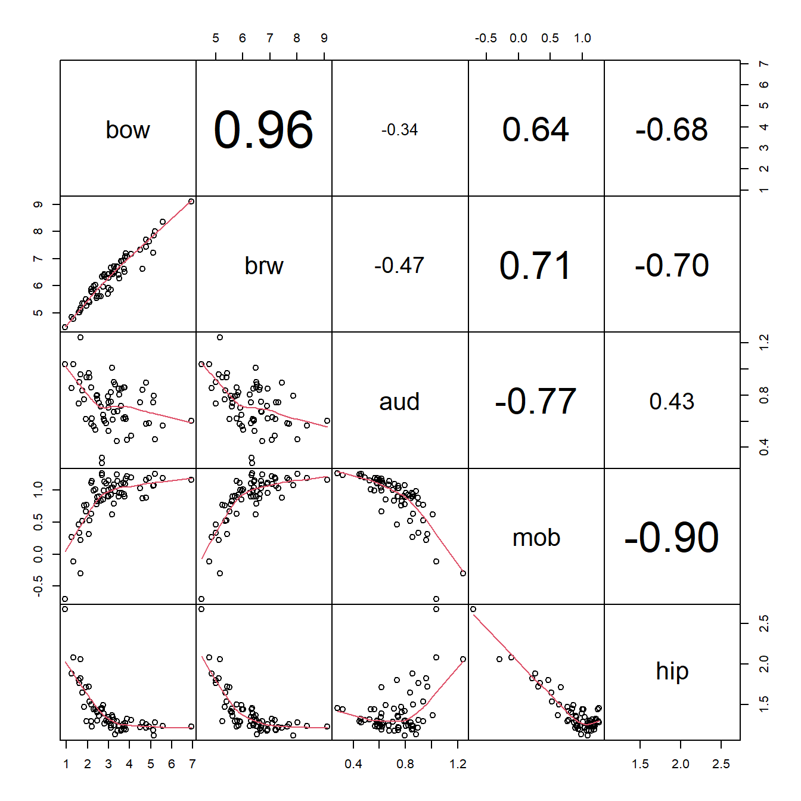
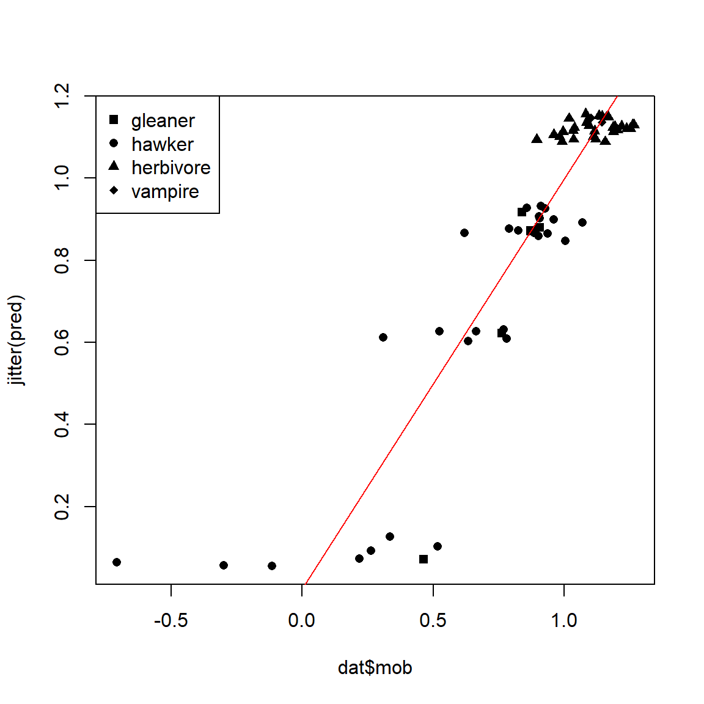

7.4 Nonlinear mixed models (NLME)
7.4.1 Definition and background
Nonlinear mixed effects models (NLME) extend the nonlinear model (NLS) to allow parameters to vary randomly by a factor. In an LMM or GLMM, the parameters that could vary randomly were the intercept and slope (or other coefficients). Because NLS models don’t always have intercepts and slopes, the random effects can potentially apply to any parameter in the model. For example, a mixed effects Michaelis-Menten model might have an asymptote, Michaelis constant, or both that vary randomly between levels of a factor:

As you might expect, fitting NLME can be tricky: it combines all of the difficulties with nonlinear models with those of mixed models! One of the most commonly used options is the nlmer() function from the lme4 package. For complicated models you may want to consider using Bayesian inference with JAGS because of the added flexibility afforded by the Markov chain Monte Carlo (MCMC) paradigm.
7.4.2 NLME on simulated data
Let’s simulate data that might have come from an enzyme kinetics study. We’ll model reaction rate y as a function of concentration x for some family of substrates. NLME might be a better choice than NLS for such a problem because the selection of substrates is only a sampling of the potential substrates, and the researcher is interested in how reaction rate might vary with concentration for other, untested substrates.
set.seed(123)
# data structure: number of substates (nlev)
# and replicates per concentration
# and substrate (nrep)
nlev <- 8
nrep <- 3
# concentrations:
x <- 10^seq(-2, 2, by=0.5)
# hyperparameters for a and b
avec <- rnorm(nlev, 129, 12)
bvec <- rnorm(nlev, 22, 12)
# assemble dataframe of predictors and parameters
dat <- expand.grid(subs=1:nlev, conc=x, rep=1:nrep)
dat$a <- avec[dat$subs]
dat$b <- bvec[dat$subs]
# calculate expected value
dat$mu <- (dat$a*dat$conc)/(dat$b+dat$conc)
# residual SD and residuals
sigma <- 10
dat$y <- rnorm(nrow(dat), dat$mu, sigma)
# can't have negative values
dat$y <- pmax(0, dat$y)
# add colors for plotting
cols <- rainbow(nlev)
dat$col <- cols[dat$subs]Make a quick plot of expected value in each group (substrate):
We can also see the actual data:
plot(jitter(dat$conc), dat$y, pch=16, col=dat$col)
Faced with these data, we might suspect that the y variable (reaction rate) could be modeled by a Michaelis-Menten (MM) function. However, we might also suspect that there is a lot of variation due to substrate that is not accounted for by a garden variety MM model. If we are not interested in these substrates in particular, but only as representatives of all substrates, then a mixed model is called for. What is not clear is whether the asymptote, Michaelis constant, or both should be random. Fortunately, it is straightforward to test all three variations.
To use nlmer(), you need to specify the model in 3 parts: response, function, and random effects. The parts are separated by tildes (~). Unlike nls(), where the model formula can be provided directly, the model formula in nlmer() must be a function that takes in a predictor and uses named parameters to produce a numeric output. The self-start functions we saw in the NLS unit can be used for this, but unlike in nls() you always need to provide starting values. The starting values can be estimated or guessed at by inspecting the scatterplot and thinking about the meaning of each parameter (example). Fortunately, the random effects syntax works in much the same way as it does in lmer().
library(lme4)
# named vector of starting values
startvec <- c(a=120, b=25)
# model 1: random asymptote
mod1 <- nlmer(y~SSmicmen(conc, a, b)~a|subs,
data=dat, start=startvec)
# model 2: random Michaelis constant
mod2 <- nlmer(y~SSmicmen(conc, a, b)~b|subs,
data=dat, start=startvec)
# model 3: random both parameters
mod3 <- nlmer(y~SSmicmen(conc, a, b)~(a|subs)+(b|subs),
data=dat, start=startvec)The parameter estimates of all three models are close to the true values. We can compare the fit of the models using AIC and find that model 3 has the best fit. This should not be surprising because model 3 is the correct one.
AIC(mod1, mod2, mod3)## df AIC
## mod1 4 1563.909
## mod2 4 1573.510
## mod3 5 1561.939Unfortunately, generating predictions for nlmer() models is not straightforward75. So, let’s use a different method of model fitting: Markov chain Monte Carlo (MCMC). You’ll need a separate program, JAGS (Plummer 2003), and the R packages rjags (Plummer 2021) and R2jags (Su and Masanao Yajima 2021). The general procedure for using JAGS is to first write the model to a text file using sink(), then call JAGS from within R. JAGS will then read the text file and fit the model. The code block below will write the model file to your current R working directory.
# write model file
mod.name <- "nlme_mod03.txt"sink(mod.name)
cat("
model{
# priors
## hyperparameters
mu.a ~ dunif(1, 200)
sd.a ~ dunif(1, 20)
mu.b ~ dunif(1, 200)
sd.b ~ dunif(1, 20)
## precision of a and b
tau.a <- 1/(sd.a * sd.a)
tau.b <- 1/(sd.b * sd.b)
## parameters
for(i in 1:nlev){
a.vec[i]~dnorm(mu.a, tau.a)
b.vec[i]~dnorm(mu.b, tau.b)
}
## residual SD and precision (tau)
sigma ~ dunif(0, 1e4)
tau.y <- 1 / (sigma * sigma)
# likelihood
for(i in 1:N){
y[i] ~ dnorm(eta[i], tau.y)
eta[i] <- (a.vec[levs[i]] *
x[i])/(b.vec[levs[i]]+x[i])
}# i for N
}#model
", fill=TRUE)
sink()Next, package the data up for JAGS. Any value or set of values used in the model must be included by name in a list.
# package data for JAGS
in.data <- list(y=dat$y,
x=dat$conc,
levs=dat$subs,
N=nrow(dat),
nlev=nlev
)Any value that is not fixed (i.e., part of the input data) must be supplied with an initial value. It doesn’t matter much what this value is, as long as it is within the proper domain of the variable. For example, initial values for the \(\lambda\) parameter of a Poisson distribution must be \(\ge\) 0. The initial values must be stored in a list that has one element for each MCMC chain. I prefer to define a function that generates initial values automatically, in case I ever want to change the number of chains.
# define initial values for MCMC chains
init.fun <- function(nc){
res <- vector("list", length=nc)
for(i in 1:nc){
res[[i]] <- list(
mu.a=runif(1, 1, 200),
sd.a=runif(1, 1, 20),
mu.b=runif(1, 1, 200),
sd.b=runif(1, 1, 20),
a.vec=runif(nlev, 1, 200),
b.vec=runif(nlev, 1, 20),
sigma=runif(1, 0.1, 20))
}#i
return(res)
}Finally, set some parameters that control how JAGS will run. For actual inference, use a number of iterations \(\ge\) 100,000 (n.iter) and a burn-in length (n.burn) of about 20% of the total number of iterations. A large thinning interval (n.thin) is needed to mitigate autocorrelation of the MCMC chains; 100 is commonly used. These values are probably larger than needed for JAGS, but not larger than needed for OpenBUGS or WinBUGS76. The final size of your posterior samples—i.e., the number of draws from the posterior distribution that can be used for inference—is equal to:
\[n_{post}=n_{chains}\left(\frac{n_{iter}-n_{burn}}{n_{thin}}\right)\]
Set the last few parameters and send the model to JAGS:
library(rjags)
library(R2jags)
nchains <- 3
inits <- init.fun(nchains)
# parameters to monitor
params <- c("mu.a", "sd.a", "mu.b", "sd.b", "sigma",
"a.vec", "b.vec")
# MCMC parameters
n.iter <- 5e3
n.burnin <- 1e2
n.thin <- 100
mod3j <- jags(data=in.data, inits=inits,
parameters.to.save=params,
model.file=mod.name,
n.chains=nchains, n.iter=n.iter,
n.burnin=n.burnin, n.thin=n.thin)#jags## Compiling model graph
## Resolving undeclared variables
## Allocating nodes
## Graph information:
## Observed stochastic nodes: 216
## Unobserved stochastic nodes: 21
## Total graph size: 909
##
## Initializing model
##
##
|
| | 0%
|
|++++++++++++++++++++++++++++++++++++++++++++++++++| 100%
##
|
| | 0%
|
|* | 2%
|
|** | 4%
|
|*** | 6%
|
|**** | 8%
|
|***** | 10%
|
|****** | 12%
|
|******* | 14%
|
|******** | 16%
|
|********* | 18%
|
|********** | 20%
|
|*********** | 22%
|
|************ | 24%
|
|************* | 27%
|
|************** | 29%
|
|*************** | 31%
|
|**************** | 33%
|
|***************** | 35%
|
|****************** | 37%
|
|******************* | 39%
|
|******************** | 41%
|
|********************* | 43%
|
|********************** | 45%
|
|*********************** | 47%
|
|************************ | 49%
|
|************************** | 51%
|
|*************************** | 53%
|
|**************************** | 55%
|
|***************************** | 57%
|
|****************************** | 59%
|
|******************************* | 61%
|
|******************************** | 63%
|
|********************************* | 65%
|
|********************************** | 67%
|
|*********************************** | 69%
|
|************************************ | 71%
|
|************************************* | 73%
|
|************************************** | 76%
|
|*************************************** | 78%
|
|**************************************** | 80%
|
|***************************************** | 82%
|
|****************************************** | 84%
|
|******************************************* | 86%
|
|******************************************** | 88%
|
|********************************************* | 90%
|
|********************************************** | 92%
|
|*********************************************** | 94%
|
|************************************************ | 96%
|
|************************************************* | 98%
|
|**************************************************| 100%The most important part of the output is here obtained by printing the model object to the console:
mod3j## Inference for Bugs model at "nlme_mod03.txt", fit using jags,
## 3 chains, each with 5000 iterations (first 100 discarded), n.thin = 100
## n.sims = 147 iterations saved
## mu.vect sd.vect 2.5% 25% 50% 75% 97.5% Rhat
## a.vec[1] 128.513 6.888 116.049 123.847 128.003 133.146 142.769 0.995
## a.vec[2] 124.844 7.369 112.265 119.553 123.998 129.427 141.065 1.027
## a.vec[3] 131.011 8.392 117.081 125.895 129.974 135.282 149.705 1.002
## a.vec[4] 128.561 7.784 114.009 123.471 128.797 133.397 143.299 1.018
## a.vec[5] 130.787 8.030 116.861 125.303 129.991 135.742 146.610 1.034
## a.vec[6] 141.115 7.310 128.492 136.745 139.739 145.799 157.006 1.030
## a.vec[7] 157.374 8.199 142.347 152.461 156.953 161.871 173.935 1.023
## a.vec[8] 112.327 9.903 94.144 105.211 111.992 118.570 132.351 0.999
## b.vec[1] 17.655 3.048 12.552 15.310 17.434 19.692 23.174 0.998
## b.vec[2] 17.503 3.452 12.110 14.843 17.549 19.415 24.899 1.045
## b.vec[3] 30.481 5.581 21.453 27.065 29.868 33.323 43.953 1.004
## b.vec[4] 25.801 4.611 18.427 22.587 25.446 28.601 35.398 0.993
## b.vec[5] 22.084 3.786 15.758 19.649 21.693 24.311 29.921 1.026
## b.vec[6] 22.279 3.304 17.169 19.847 21.889 24.332 29.111 1.015
## b.vec[7] 23.264 3.522 17.293 20.870 22.635 25.248 30.658 1.036
## b.vec[8] 38.488 8.071 25.234 32.215 37.642 44.289 55.795 1.007
## mu.a 131.686 5.700 120.606 128.297 131.977 135.282 143.156 0.999
## mu.b 24.845 3.978 18.438 22.266 24.084 27.565 32.609 1.018
## sd.a 14.226 3.392 7.310 11.971 14.170 16.999 19.760 1.064
## sd.b 9.087 3.613 3.604 6.349 8.695 11.196 17.040 1.037
## sigma 8.244 0.411 7.515 7.919 8.222 8.496 9.086 1.017
## deviance 1523.397 6.499 1513.634 1518.874 1522.689 1526.226 1537.916 1.080
## n.eff
## a.vec[1] 150
## a.vec[2] 75
## a.vec[3] 150
## a.vec[4] 150
## a.vec[5] 68
## a.vec[6] 150
## a.vec[7] 140
## a.vec[8] 150
## b.vec[1] 150
## b.vec[2] 58
## b.vec[3] 150
## b.vec[4] 150
## b.vec[5] 67
## b.vec[6] 140
## b.vec[7] 76
## b.vec[8] 120
## mu.a 150
## mu.b 150
## sd.a 83
## sd.b 75
## sigma 150
## deviance 35
##
## For each parameter, n.eff is a crude measure of effective sample size,
## and Rhat is the potential scale reduction factor (at convergence, Rhat=1).
##
## DIC info (using the rule, pD = var(deviance)/2)
## pD = 20.2 and DIC = 1543.5
## DIC is an estimate of expected predictive error (lower deviance is better).Unlike lmer(), glmer(), and nlmer(), an MCMC output automatically contains estimates of the region in which value of each parameter is likely to fall. However, instead of being called “confidence intervals” (CI), these intervals are called credible intervals (CRI). The difference between a CI and a CRI is in how they are calculated. CI are calculated using the estimated mean, SE, and properties of the normal distribution. CRI, on the other hand, are simply quantiles of the posterior distribution of the parameter. This means that CRI are inherently Bayesian and only defined in Bayesian inference; CI are frequentist and used in non-Bayesian context. CRI have the distinct advantage of not assuming anything about the appropriate distribution for the parameter.
Other outputs of MCMC can be used to calculate model predictions and their 95% CRI. Let’s use the posterior draws to calculate model predictions. The posteriors are stored in several ways within the JAGS output. For generating predictions and CRI, we should use the values in the sims.matrix part of the output, which have already been permuted (this reduces bias in the predictions).
po <- mod3j$BUGSoutput$sims.matrix
nsim <- nrow(po)
a.cols <- grep("a.vec", colnames(po))
b.cols <- grep("b.vec", colnames(po))
pn <- 100
x <- seq(min(dat$conc), max(dat$conc), length=pn)
# version 1: full random effects
dx1 <- expand.grid(subs=1:nlev, conc=x)
dy1 <- matrix(NA, nrow=nrow(dx1), ncol=nsim)
for(i in 1:nrow(dx1)){
ilev <- dx1$subs[i]
use.ac <- a.cols[ilev]
use.bc <- b.cols[ilev]
for(j in 1:nsim){
use.a <- po[j, use.ac]
use.b <- po[j, use.bc]
dy1[i,j] <- (use.a*dx1$conc[i])/(use.b+dx1$conc[i])
}
}
dx1$lo <- apply(dy1, 1, quantile, 0.025)
dx1$mn <- apply(dy1, 1, quantile, 0.5)
dx1$up <- apply(dy1, 1, quantile, 0.975)
# version 2: no random effects
dx2 <- data.frame(conc=x)
dy2 <- matrix(NA, nrow=nrow(dx2), ncol=nrow(po))
for(i in 1:nrow(dx2)){
for(j in 1:nsim){
dy2[i,j] <- po[j,"mu.a"]*dx2$conc[i]/(po[j,"mu.b"]+dx2$conc[i])
}
}
dx2$lo <- apply(dy2, 1, quantile, 0.025)
dx2$mn <- apply(dy2, 1, quantile, 0.5)
dx2$up <- apply(dy2, 1, quantile, 0.975)Now make the plot:
plot(dx2$conc, dx2$mn, type="n",
xlab="Concentration (units)",
ylab="Reaction rate (units)",
ylim=c(0, 150))
polygon(x=c(dx2$conc, rev(dx2$conc)),
y=c(dx2$lo, rev(dx2$up)),
border=NA, col="lightpink")
points(dx2$conc, dx2$mn, type="l", lwd=3, col="red2")
for(i in 1:nlev){
flag <- which(dx1$subs==i)
points(dx1$conc[flag], dx1$mn[flag],
type="l", col="grey40")
}
The plot shows the curves for individual substrates as thin lines, and the overall prediction with 95% CRI as a red line and shaded area. The highlighted curve and CRI is the expectation for any level of the random effect factor not in the original dataset. In other words, it is what the model predicts given the variability in the levels of the random factor that have already been observed. The ability to make robust predictions about unobserved levels of the random factor is one of the biggest advantages of mixed models.
7.4.3 NLME on real data
Kirchman et al. (2009) investigated the role of temperature and organic carbon availability on growth and secondary production by heterotrophic bacteria in the oceans. Heterotrophic bacteria are key components of marine food webs and can exert enormous control over ecosystem cycling of nutrients. The figure below shows the place of heterotrophic bacteria in the marine “microbial loop” that relates dissolved CO2 and dissolved organic carbon (DOC) (Kirchman et al. 2009).

To better understand how these bacteria affect ocean ecosystems, the authors examined bacterial growth (d-1) and productivity (mmol C m-2 d-1) varied with latitude (\(^\circ\)N or \(^\circ\)S), nutrient availability (\(\mu\)M C), and mean annual temperature (\(^\circ\)C). We will re-examine part of their dataset to practice using nonlinear mixed effects models. The data are stored in this text file. Download this file and save it to your R working directory.
in.name <- "kirchman_data_2021-10-21.csv"
dat <- read.csv(in.name, header=TRUE)As usual, we start by exploring the distributions of the variables and a basic scatterplot.
par(mfrow=c(1,3))
hist(dat$temp)
hist(dat$prod)
plot(dat$temp, dat$prod)
The figure suggests that the response variable, productivity (prod), is right-skewed. So, it might benefit from a log transform. The scatterplot backs this up—notice the “dust bunny” in the lower right. It’s not clear whether or not the predictor variable temperature (temp) needs to be transformed. Let’s leave it alone for now.
Make a log-transformed version of productivity and a new set of exploratory figures. We’ll use \(log_{10}\) to save ourselves some trouble later.
dat$logy <- log10(dat$prod)
par(mfrow=c(1,3))
hist(dat$temp)
hist(dat$logy)
plot(dat$temp, dat$logy)
There appears to be a nonlinear relationship between log-transformed productivity and temperature. The values start small and increase quickly until about 2 \(^\circ\)C, after which the productivity levels off. Can you think of a biological interpretation of this curve shape?
There seem to be some distinct clumps in the scatterplot which might correspond to the grouping variable sea. Let’s add some colors to the dataset and then to the plot. Just for fun, let’s make a color ramp from colder to warmer sites.
agg <- aggregate(temp~sea, data=dat, median)
agg <- agg[order(agg$temp),]
nsea <- nrow(agg)
seas <- agg$sea
# color ramp from colder (blue) to warmer (red)
col.fun <- colorRampPalette(c("blue", "red"))
cols <- col.fun(nsea)
agg$col <- cols
matchx <- match(dat$sea, agg$sea)
dat$col <- agg$col[matchx]
par(mfrow=c(1,1))
plot(dat$temp, dat$logy,
pch=16, col=dat$col, cex=1.3)
legend("bottomright", legend=seas,
pch=16, col=cols, cex=1.3)
As nice as the color ramp effect is, the seas are still hard to tell apart. Let’s add some shapes as well.
agg$shp <- 15:17
dat$shp <- agg$shp[matchx]
par(mfrow=c(1,1))
plot(dat$temp, dat$logy,
pch=dat$shp, col=dat$col, cex=1.3)
legend("bottomright", legend=seas,
pch=agg$shp, col=cols, cex=1.3)
There appears to be an effect of temperature and possibly of sea. Biologically, the bacteria within a sea are probably more similar to each other than they are to bacteria in other seas. So, we should expect there to be some effect of sea just based on genetic relatedness or some other kind of similarity. However, we want a model that is applicable to all seas, not just the 6 in this dataset. For example, this dataset is missing the Indian Ocean, the Mediterranean, the Caribbean, the Sea of Japan, and many others. So, we need a nonlinear mixed model. We don’t know exactly what curve to use, so we’ll try a few. The table below shows the equations for each model.
| Model | Function | Fixed effects | Random effects |
|---|---|---|---|
| 1 | Monod, random a | \(\mu_i=\frac{a_jx_i}{b+x_i}\) | \(a_j \sim Normal\left(\mu_a,\sigma_a^2\right)\) |
| 2 | Monod, random b | \(\mu_i=\frac{ax_i}{b_j+x_i}\) | \(b_j \sim Normal\left(\mu_b,\sigma_b^2\right)\) |
| 3 | Monod, random a and b | \(\mu_i=\frac{a_jx_i}{b_j+x_i}\) | \(a_j \sim Normal\left(\mu_a,\sigma_a^2\right)\) |
| \(b_j \sim Normal\left(\mu_b,\sigma_b^2\right)\) | |||
| 4 | Holling type III, random a | \(\mu_i=\frac{a_jx_i^2}{b^2+x_i^2}\) | \(a_j \sim Normal\left(\mu_a,\sigma_a^2\right)\) |
| 5 | Holling type III, random b | \(\mu_i=\frac{ax_i^2}{b_j^2+x_i^2}\) | \(b_j \sim Normal\left(\mu_b,\sigma_b^2\right)\) |
| 6 | Holling type III, random a and b | \(\mu_i=\frac{a_jx_i^2}{b^2+x_i^2}\) | \(a_j \sim Normal\left(\mu_a,\sigma_a^2\right)\) |
| \(b_j \sim Normal\left(\mu_b,\sigma_b^2\right)\) | |||
| 7 | Monomolecular, random a | \(\mu_i=a_j\left(1-e^{-bx}\right)\) | \(a_j \sim Normal\left(\mu_a,\sigma_a^2\right)\) |
| 8 | Monomolecular, random b | \(\mu_i=a\left(1-e^{-b_jx}\right)\) | \(b_j \sim Normal\left(\mu_b,\sigma_b^2\right)\) |
| 9 | Monomolecular, random a and b | \(\mu_i=a_j\left(1-e^{-b_jx}\right)\) | \(a_j \sim Normal\left(\mu_a,\sigma_a^2\right)\) |
| \(b_j \sim Normal\left(\mu_b,\sigma_b^2\right)\) |
Fitting the Monod (aka: Michaelis-Menten) model with mixed effects is simple, because there is a self-start version of the function designed for nonlinear modeling (we’ve used it before). We just need to remember to supply reasonable starting values.
library(lme4)
# Monod (aka: Michaelis-Menten) with
# different random structures
startvec <- c(a=1.3, b=1)
mod01 <- nlmer(logy~SSmicmen(temp, a, b)~a|sea,
data=dat, start=startvec)
mod02 <- nlmer(logy~SSmicmen(temp, a, b)~b|sea,
data=dat, start=startvec)
mod03 <- nlmer(logy~SSmicmen(temp, a, b)~(a|sea)+(b|sea),
data=dat, start=startvec)The other two curves are less simple to fit because there is no self-start model available. In nlmer(), the fixed part of the model needs to be provided as a special type of function that takes in input values and parameter values, and outputs a vector of response values. Additionally, the function needs to have some internal attributes that let nlmer() evaluate its likelihood function and how the likelihood function changes. The procedure below seems to work well.
# Holling type III (Bolker 2008 p. 92)
startvec <- c(a=1.3, b=1)
# define model as function
holl <- ~(a*x^2)/(b^2 + x^2)
# prepare version of function for nlmer()
hollfun <- deriv(holl, namevec=c("a", "b"),
function.arg=c("x", "a", "b"))
# fit models
mod04 <- nlmer(logy~hollfun(temp, a, b)~a|sea,
data=dat, start=startvec)
mod05 <- nlmer(logy~hollfun(temp, a, b)~b|sea,
data=dat, start=startvec)## Warning in (function (fn, par, lower = rep.int(-Inf, n), upper = rep.int(Inf, :
## failure to converge in 10000 evaluations## Warning in optwrap(control$optimizer[[1]], devfun, rho$pp$theta, lower =
## rho$lower, : convergence code 4 from Nelder_Mead: failure to converge in 10000
## evaluations## Error in fn(nM$xeval()): prss{Update} failed to converge in 'maxit' iterationsmod06 <- nlmer(logy~hollfun(temp, a, b)~(a|sea)+(b|sea),
data=dat, start=startvec)## Error in fn(nM$xeval()): prss{Update} failed to converge in 'maxit' iterations# monomolecular (Bolker p. 95)
# special case of von Bertalanffy curve
# define model as function
mono <- ~a*(1-exp(-b*x))
# prepare version of function for nlmer()
monofun <- deriv(mono, namevec=c("a", "b"),
function.arg=c("x", "a", "b"))
mod07 <- nlmer(logy~monofun(temp, a, b)~a|sea,
data=dat, start=startvec)
mod08 <- nlmer(logy~monofun(temp, a, b)~b|sea,
data=dat, start=startvec)
mod09 <- nlmer(logy~monofun(temp, a, b)~(a|sea)+(b|sea),
data=dat, start=startvec)R was not able to find solutions for models 5 and 6, so we can discard those. Let’s examine the outputs of the models that did fit. First, we can use AIC to get a sense of which models might have worked best:
aic.df <- AIC(mod01, mod02, mod03, mod04, mod07, mod08, mod09)
aic.df$delta <- aic.df$AIC - min(aic.df$AIC)
aic.df$wt <- exp(-0.5*aic.df$delta)
aic.df$wt <- aic.df$wt/sum(aic.df$wt)
aic.df <- aic.df[order(-aic.df$wt),]
aic.df## df AIC delta wt
## mod08 4 105.4030 0.000000 6.545609e-01
## mod09 5 107.4030 1.999977 2.408023e-01
## mod07 4 109.0699 3.666938 1.046368e-01
## mod04 4 156.6238 51.220848 4.937240e-12
## mod01 4 164.5428 59.139802 9.416842e-14
## mod03 5 166.5428 61.139802 3.464263e-14
## mod02 4 376.3158 270.912825 9.726972e-60The AICs suggest that model 8 is the best-fitting. This was the monomolecular curve with the growth constant (b) varying by sea. The Monod functions were the worst fitting (by AIC); and the only Holling curve that fit was somewhere in the middle.
Let’s generate and plot model predictions as usual. We’ll have to calculate the predictions manually because the predict() method for nlmer() objects is not well documented.
# number of points and x values
pn <- 50
px <- seq(min(dat$temp), max(dat$temp), length=pn)
# predictions by level (sea)
dx1 <- expand.grid(sea=seas, temp=px)
dx1 <- dx1[order(dx1$sea, dx1$temp),]
## coefficients table (including random b)
cofs <- coef(mod08)$sea
matchx <- match(dx1$sea, rownames(cofs))
dx1$a <- cofs$a[matchx]
dx1$b <- cofs$b[matchx]
## calculate predictions
dx1$y <- dx1$a*(1-exp(-dx1$b*dx1$temp))
# prediction of overall mean (applicable to other seas)
dx2 <- data.frame(temp=px)
fixe <- fixef(mod08)
dx2$y <- fixe["a"]*(1-exp(-fixe["b"]*dx2$temp))Now we can assemble a few pieces and make our nice plot.
# 40% opacity (alpha) to the colors for
# clearer plot (pun intended)
dat$col2 <- paste0(dat$col, "40")
# nicer version of names for legend
leg.labs <- c(
"Ross Sea", "Western Arctic",
"Subarctic Pacific", "North Atlantic",
"Arabian Sea", "Equatorial Pacific")
# graphical parameters for attractive plot
par(mfrow=c(1,1), mar=c(5.1, 5.1, 1.1, 1.1),
lend=1, las=1, bty="n",
cex.axis=1.3, cex.lab=1.3)
# set up plot area
## note expression() used for proper axis labels
## and y axis suppressed (yaxt="n") so a better
## y axis can be added manually
plot(dat$temp, dat$logy, type="n",
xlab=expression(Temperature~(degree*C)),
ylab=expression(Productivity~(mmol~C~m^{-2}~d^{-1})),
yaxt="n",
ylim=c(-1.5, 2))
# add sea-specific lines in a loop
for(i in 1:nsea){
flag <- which(dx1$sea == seas[i])
points(dx1$temp[flag], dx1$y[flag],
type="l", col="grey60")
}
# add fixed effect line
points(dx2$temp, dx2$y, type="l", lwd=3)
# original data, with semi-transparent colors
points(dat$temp, dat$logy,
pch=dat$shp, col=dat$col2, cex=1.3)
# fancy y axis with logarithmic tick marks
axis(side=2, at=seq(-1, 2, by=1),
labels=c(0.1, 1, 10, 100))
axis(side=2, at=log10(c(2:9/10, 2:9, 2:9*10)),
labels=NA, tcl=-0.25)
# legend
legend("bottomright", legend=leg.labs, pch=agg$shp,
col=paste0(cols, "40"), cex=1.3, bty="n")